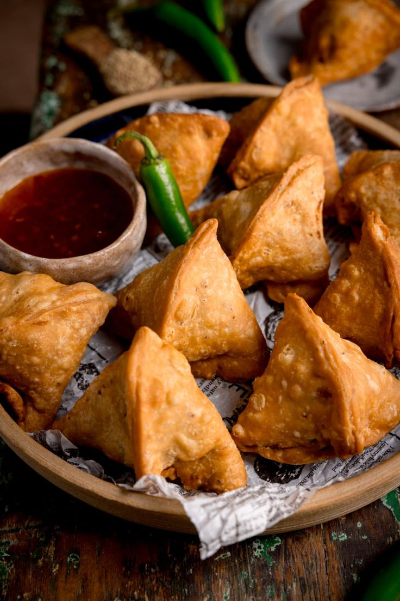

🥟 Authentic Samosa Recipe (Street Style)
INGREDIENTS
🔘 Dough (Crispy Outer Layer)
- 2 cups all-purpose flour (maida)
- ¼ tsp carom seeds (ajwain)
- 4 tbsp oil or ghee – for moyan
- Salt – to taste
- Water – for kneading
🔘 Potato Filling (Masaledaar Aloo Masala)
- 4 medium boiled potatoes – peeled & mashed
- ½ cup green peas – boiled (optional)
- 1 tbsp oil
- 1 tsp cumin seeds
- 1 tsp fennel seeds (saunf)
- 1 tsp grated ginger
- 2 green chilies – finely chopped
- ½ tsp turmeric
- 1 tsp red chili powder
- 1 tsp coriander powder
- 1 tsp garam masala
- 1 tsp amchur (dry mango powder) or lemon juice
- Salt – to taste
- Fresh coriander – chopped
RECIPE

- 🔥 Dough Instructions:
- 1️⃣ In a bowl, mix flour, ajwain, and salt.
- 2️⃣ Add oil/ghee and rub into the flour till it resembles breadcrumbs.
- 3️⃣ Add water gradually to knead a stiff dough.
- 4️⃣ Cover with damp cloth and let it rest for 30 mins.
- 📝 Tip: Dough should clump when pressed before adding water if moyan is perfect.
- 🔥 Filling Instructions:
- 1️⃣ Heat oil → add cumin & fennel seeds.
- 2️⃣ Add green chilies + ginger. Sauté for a minute.
- 3️⃣ Add boiled peas + mashed potatoes → mix well.
- 4️⃣ Add spices, salt, amchur. Cook for 2–3 mins.
- 5️⃣ Add fresh coriander. Cool completely.
- 🔥 Shaping & Frying Instructions:
- 1️⃣ Divide dough into balls. Roll each into oval discs (~6–7 inches).
- 2️⃣ Cut in half to make semi-circles.
- 3️⃣ Apply water on edges → fold into cone shape.
- 4️⃣ Fill with potato filling.
- 5️⃣ Seal top edge tightly using water.
- 6️⃣ Heat oil on medium-low. Fry samosas slowly till golden and crispy.
- 💡 Slow frying gives flaky halwai-style crust!